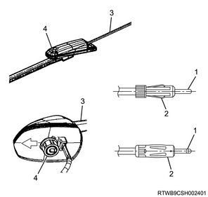

1. Inspect the antenna using the circuit tester.
Note

The core wire metal is connected to the antenna pole through the core wire of the feed line.
For the winding metal, the core wire is shielded inside the feed line. It is grounded to the body by the antenna body to prevent noise on the core wire.
Note
When there is no continuity or the meter gauge needle does not move, there is nothing wrong.
When there is continuity, the feed line is pinched and the core wire is shorted to the ground, the sensitivity is reduced.
Note
When continuity exists or the meter reads "0Ω", there is no abnormality.
When there is no continuity, the shielded part of the core wire is open or improper body ground exists in the screw section, noise is mixed.
Note
When there is continuity or no continuity, some of the antenna and the relay feeder connections have capacitors in them, so it cannot be inspected by measuring the resistance. Check the sound by temporarily connecting it to a radio.
Caution